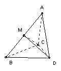

Prove that a tetrahedron with just one edge length greater than 1 has volume at most 1/8.
Solution

Let the tetrahedron be ABCD and assume that all edges except AB have length at most 1. The volume is the 1/3 x area BCD x height of A above BCD. The height is at most the height of A above CD, so we maximise the volume by taking the planes ACD and BCD to be perpendicular. If AC or AD is less than 1, then we can increase the altitude from A to CD whilst keeping BCD fixed by taking AC = AD = 1. A similar argument shows that we must have BC = BD = 1.
But the volume is also the 1/3 x area ABC x height of D above ABC, so we must adjust CD to maximise this height. We want the angle between planes ABC and ABD to be as close as possible to 90o. The angle increases with increasing CD until it becomes 90o. CMD is then a right-angled triangle. Now the angle ACB must be less than the angle between the planes ACD and BCD and hence < 90o, so angle ACM < 45o, so CM > 1/√2. Similarly DM. Hence when CMD = 90o we have CD > 1. Thus we maximise the height of D above ABC by taking CD = 1.
So BCD is equilateral with area (√3)/4. ACD is also equilateral with altitude (√3)/2. Since the planes ACD and BCD are perpendicular, that is also the height of A above BCD. So the volume is 1/3 x(√3)/4 x (√3)/2 = 1/8.

Solutions are also available in: Samuel L Greitzer, International Mathematical Olympiads 1959-1977, MAA 1978, and in István Reiman, International Mathematical Olympiad 1959-1999, ISBN 189-8855-48-X.
© John Scholes
jscholes@kalva.demon.co.uk
4 Oct 1998
Last corrected/updated 27 Oct 2002